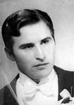
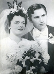
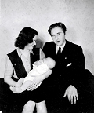

Ingvar Valentin Fredman
Verkmästare, tjänsteman vid Träforskningsinstitutet, fastighetsförvaltare, aktiv delägare. Blev 81 år.
| Född: | 1917-10-08 Zefansvik 1, Björksele, Lycksele sn. [1] | |
|---|
| Döpt: | 1918-02-25 Zefansvik 1, Björksele, Lycksele sn. [2] | Dopförättare: Fr. Jansson Dopvittnen: K. Karlsson, Hulda Eriksson, Nils Renström och Elin Aronsson Lundin. |
|---|
| Omflyttad till: | 1925-02-25 Stangolund, Vormträsk, Lycksele sn. [3] | |
|---|
| Omflyttad till: | 1940 Kristineberg, Björksele fs, Lycksele sn. [4] | Arbeter på gruvlaboratoriet i Kristineberg. På fritiden spelar han dragspel i olika sammanhang. Han sköter också filmutrustningen på Folkans biograf. |
|---|
| Laboratoriebiträde: | från 1940 i Malmlaboratoriet vid Kristinebergs gruva, Lycksele sn (AC). [5] | |
|---|
| Utflyttad till: | 1949-12 Stockholm. [4] | |
|---|
| Utbildad: | 1950 Tekniska studier, Stockholm. | |
|---|
| Verkmästare: | omkring 1953 Apotekarenes vatten (nuv. Pripps bryggerier). | |
|---|
| Fastighetsförvaltare för ca. 1.000 lägenheter: | 1963 Hägernäs, Näsby Park, Stockholm. | |
|---|
| Tryckerifaktor: | 1968 Träforskningsinstitutet, Stockholm. | |
|---|
| Överfall och rån med hospitalisering som resultat: | 1972-09 vid en tunnelbanestation i Stockholm. | |
|---|
| Död: | 1999-02-23 Enskede, Stockholm. [6] | |
|---|
| Begravd: | 1999-03-11 Sandsborgskyrkogården, Stockholm. [4] | |
|---|
| Vigsel: | 1946-05-11 Kristineberg, Björksele fs, Lycksele sn. [5] | I ett handskrivet telegram från arbetskamrater vid Kristinebergs gruva kan läsas:
Rubrik: I sista stund anländer Telegram till Brudparet Fredman.
Från verket nu Vi driftstopp ställer,
en tyst minut för det äkta par.
På Folkan nu applåden smäller för Ingvar,
och den tös han tar.
Du jobbat har med prov, och analyser,
prov från skål och borr, och övrerläpp.
Kemisk procedur och formler, så man fryser,
Du klarat det, tack vare snus på underläpp.
Ett annat jobb, Du nu hoppar på, Ingvar lille,
att sköta kvinns, det så kallat, svaga kön.
Trots varningen av oss, Du ändå ville,
men vi spår att du nu, skall göra andra rön.
För märk att allt ifrån Adams dagar,
har Eva lurat, med kunskapens frukt,
men med kaveln i sin hand, hon mannen jagar,
och i dagligt tal, hon håller han i tukt.
Så kan Vi ej nu längre låta verket stå,
Vi kör igång! Ni hör hur kvarnar surra,
så önskar vi er lycka till, med dessa rader få,
och att Ni hör hur Vi i Verket Hurra!!!!
Verkarna u.p.a. vid Kristinebergs gruva
|
|---|
| Skilsmässa: | 1949-11-25 Kristineberg, Björksele fs, Lycksele sn. | |
|---|
| Samboförhållande: | från 1958 till 1981 Stockholm. |
|---|
Noteringar
Min far Ingvar Fredman var i sin ungdom en dokumenterad god skytt. Han spelade dragspel och kom därigenom att turnera omkring med en dansorkester. Han var en uppskattad maskinist vid biografen i gruvsamhället Kristineberg, Lycksele sn och försörjde sin familj genom sitt arbete i gruvlaboratoriet innan han efter otrohet med en norsk jenta fick bryta upp från äktenskapet. Han flyttade till Stockholm, där han skaffade sig en mer gedigen teknisk utbildning. Till en början var han verkmästare vid Apotekarnes Vatten, föregångare till Prippsbryggerierna. Han levde samman med Ingrid Kårvall från Gotland, änka efter Elis Kårvall, valthornist vid Radiosymfonikernas orkester. Jag lärde känna min far från 16-årsåldern och varje sommar därefter fick vi umgås på "Bellmansro" på Dalarö i Stockholms skärgård. Dragspelets toner fyllde kvällarna vid lägerelden allt medan fladdermössen vid skymningen samlade in den dagliga födan uppe vid trädtopparna. Rådjursbockens bröl och hindens smygande finns också med i mina minnen från dessa år. Vi fick en chans att trevande försöka ta tillbaka förlorade år. Bellmansro på Dalarö har varit i familjens ägo från 1954 tills min fars frånfälle 1999.
Personhistoria
| Årtal | Ålder | Händelse |
|---|
| 1917 |
|
Födelse 1917-10-08 Zefansvik 1, Björksele, Lycksele sn [1] |
| 1918 |
3 mån |
Partnern Ingrid Kårvall föds 1918-01-19 Visby sfs, Visby stad [7] |
| 1918 |
4 mån |
Dop 1918-02-25 Zefansvik 1, Björksele, Lycksele sn [2] |
| 1918 |
1 år |
Brodern Henry Konstantin Fredman föds 1918-10-15 Zefansvik 1, Björksele, Lycksele sn [8] |
| 1919 |
1 år |
Brodern Henry Konstantin Fredman dör 1919-03-05 Zefansvik 1, Björksele, Lycksele sn [8] |
| 1920 |
2 år |
Fadern Fritz Eugen Fredman dör 1920-04-22 Zefansvik 1, Björksele, Lycksele sn [9] |
| 1920 |
3 år |
Systern Maude Elaine Margareta Fredman föds 1920-11-24 Zefansvik 1, Björksele, Lycksele sn [10] |
| 1923 |
6 år |
Makan Ruth Elvira Granström föds 1923-11-29 Adamsgård 1, Kalvträsk fs, Burträsk sn [11] |
| 1925 |
7 år |
Omflyttad till 1925-02-25 Stangolund, Vormträsk, Lycksele sn [3] |
| 1925 |
7 år |
Halvbrodern Tord Paul Nordin föds 1925-06-17 Stangolund, Lycksele sn [12] |
| 1926 |
8 år |
Halvsystern Elna Alette Nordin föds 1926-04-16 Stangolund, Lycksele sn [13] |
| 1940 |
|
Omflyttad till 1940 Kristineberg, Björksele fs, Lycksele sn [4] |
| >1940 |
|
Laboratoriebiträde från 1940 i Malmlaboratoriet vid Kristinebergs gruva, Lycksele sn (AC) [5] |
| 1946 |
|
Sonen Jan Fredman föds 1946 Kristineberg, Björksele fs, Lycksele sn [5] |
| 1946 |
28 år |
Vigsel Ruth Elvira Granström 1946-05-11 Kristineberg, Björksele fs, Lycksele sn [5] |
| 1947 |
30 år |
Dottern Rut Gullan Viveka Fredman föds 1947-11-29 Kristineberg, Björksele fs, Lycksele sn |
| 1949 |
32 år |
Skilsmässa Ruth Elvira Granström 1949-11-25 Kristineberg, Björksele fs, Lycksele sn |
| 1949 |
|
Utflyttad till 1949-12 Stockholm [4] |
| 1950 |
|
Utbildning 1950 Tekniska studier, Stockholm |
| 1953? |
|
Verkmästare omkring 1953 Apotekarenes vatten (nuv. Pripps bryggerier) |
| >1958 |
|
Samboförhållande Ingrid Kårvall från 1958 till 1981 Stockholm |
| 1961 |
43 år |
Modern Lydia Margareta Josefina Karlsdotter Johansson dör 1961-02-15 Väja, Gudmundrå fs, Kramfors kn [14] |
| 1963 |
|
Fastighetsförvaltare för ca. 1.000 lägenheter 1963 Hägernäs, Näsby Park, Stockholm |
| 1968 |
|
Tryckerifaktor 1968 Träforskningsinstitutet, Stockholm |
| 1972 |
|
Överfall och rån med hospitalisering som resultat 1972-09 vid en tunnelbanestation i Stockholm |
| 1981 |
63 år |
Partnern Ingrid Kårvall dör 1981-09-05 Frejgatan, Stockholm [15] |
| 1982 |
65 år |
Halvsystern Elna Alette Nordin dör 1982-10-27 Härnösand stad [16] |
| 1985 |
67 år |
Halvbrodern Tord Paul Nordin dör 1985-03-27 Väja, Ytterlännäs fs, Kramfors kn [17] |
| 1997 |
79 år |
Makan Ruth Elvira Granström dör 1997-02-21 Skellefteå, S:t Olovs fs, Skellefteå kn |
| 1999 |
81 år |
Död 1999-02-23 Enskede, Stockholm [6] |
| 1999 |
|
Begravning 1999-03-11 Sandsborgskyrkogården, Stockholm [4] |
Källor
| [1] | Lycksele AII:1E (1900-1920) fol. 1110 k.5/7, C:9 (1917-1927) s.30 k.1/9 |
| |
| | |
| [2] | Lycksele C:9 (1917-1927) s.30 r.239 k.1/9 |
| |
| | |
| [3] | Lycksele AII:2D (1920-1930) fol. 1532 k.8/9 |
| |
| | |
| [4] | Jan Fredman |
| |
| | |
| [5] | SCB Födda AC Norsjö 101/1946 |
| |
| | |
| [6] | Jan Fredman, RTB 99 |
| |
| | |
| [7] | Mtl Stockholm län 1981 |
| |
| | |
| [8] | Lycksele AII:1E (1900-1920) fol. 1110 k.5/7 |
| |
| | |
| [9] | Lycksele AII:1E (1900-1920) fol. 1110 k.5/7, F:5 (1913-1927) |
| |
| | |
| [10] | Lycksele AII:2D (1920-1930) fol. 1270 r. 16 k.2/9 |
| |
| | |
| [11] | Födda AC Kalvträsk C: 43/1923 k.9/15 |
| |
| | |
| [12] | Lycksele AII:2D (1920-1930) fol. 1532 k.8/9, RTB 85 / SPAR 90 |
| |
| | |
| [13] | Lycksele AII:2D (1920-1930) fol. 1532 k.8/9, SPAR 90, RTB 82 |
| |
| | |
| [14] | DOR 61, UTD 61-67 |
| |
| | |
| [15] | SPAR 90, RTB 81 |
| |
| | |
| [16] | SPAR 90, RTB 82 |
| |
| | |
| [17] | RTB 85 / SPAR 90 |
| |
|
|  |
| 1946-05-11. Min far Ingvar Fredman som brudgum. |
| |
|  |
| 1946-05-11. Brudparet Ruth Granström och Ingvar Fredman. |
| |
 |
| 1946-05-11. Mormor Eva Granström, Ruth och Ingvar Fredman, morfar Karlander Granström och brudnäbben systern Gun-Britt Granström. |
| |
|  |
| 1946. Ruth, Ingvar och sonen Jan Fredman. |
|

{kind=link}
{kind=link}
{kind=link}